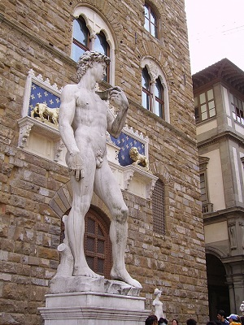
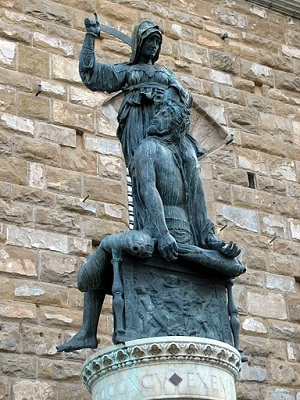

Piazza della Signoria Area: Sample Itinerary, Tues-Sun
- Uffizi Gallery
- Lunch Nearby Restaurants
- Sculptures in the Piazza
- Palazzo Vecchio
- Snack Nearby cafes and ice cream
- Window shop along Ponte Vecchio
Detailed Site Information
| Site | Hours | Cost | Reservation | Notes |
|---|---|---|---|---|
| Uffizi | Tu-Su, 8:15am-6:50pm | €12 | Online | Book entrance time online to avoid lines, reservation fee. |
| Palazzo Vecchio | Everyday but Th, 9am-11pm (Oct-March to 7pm), Th 9am-2pm year round | €18* | Recommended | *Combined Museum/Archaeological Tour/Tower/Battlements |
| Ponte Vecchio | Shops may be closed Sundays, for lunch 12:30 - 3:30, August | Free | No |
Nearby Restaurants
- Vinaino Fiorenza, $, Via Vacchereccia 13/R
- Pizza Napoli 1955, $, Via dei Neri 73
- Ristorante Pizzeria Gustavino, $$-$$$, Via della Condotta, 37R
- Vini e Vecchi Sapori, $$-$$$, Via Dei Magazzini 3R
- Trattoria Ponte Vecchio, $$-$$$, 8, Lungarno Archibusieri
Nearby Cafes and Ice Cream
- Ditta Artigianale, cafe, Via dei Neri 32
- Caffe Rivoire, Piazza della Signoria 5r
- Carapina, gelato, Via Lambertesca 18/R
- Gelateria dei Neri, Via De' Neri 9/11R
- Venchi Chocolate Gelato, Via Calimaruzza, 18
David as a Symbol of Florence
The Biblical hero David who slayed the invading giant Goliath has long served as a symbol of Florence. That David could defeat such a powerful foe with only a slingshot demonstrated his community's righteousness. Michelangelo's version was commissioned while Florence was a Republic, and David symbolized the city-state's independence. It was originally intended to be placed along the roof of the Duomo, Florence's cathedral, but once the statue was completed, a more conspicuous spot was sought. A replica of the sculpture stands there now, in front of the Palazzo Vecchio, the seat of civic government. Other public sculptures in the Piazza della Signoria depict underdogs defeating wicked foes, like Judith and Holofernes by Donatello.
